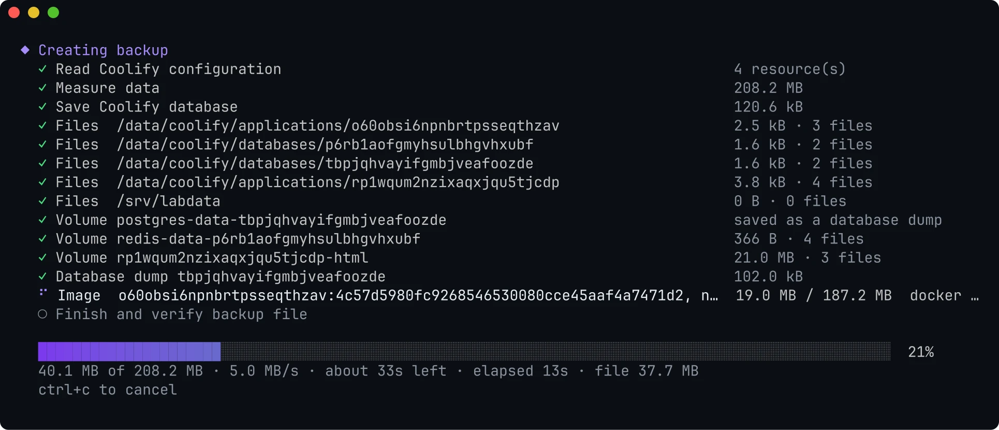
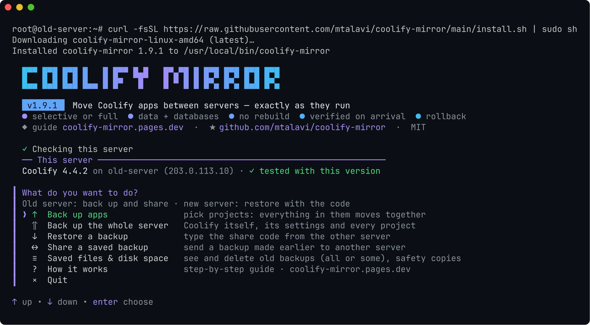
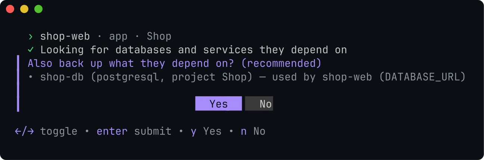
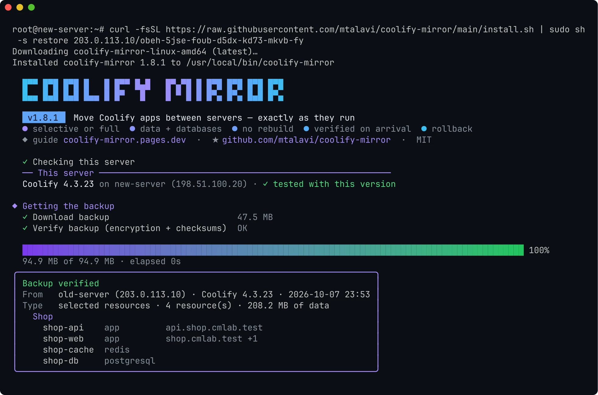
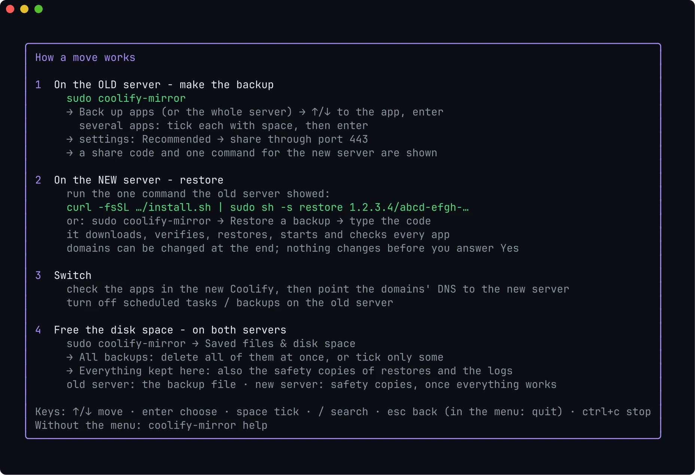
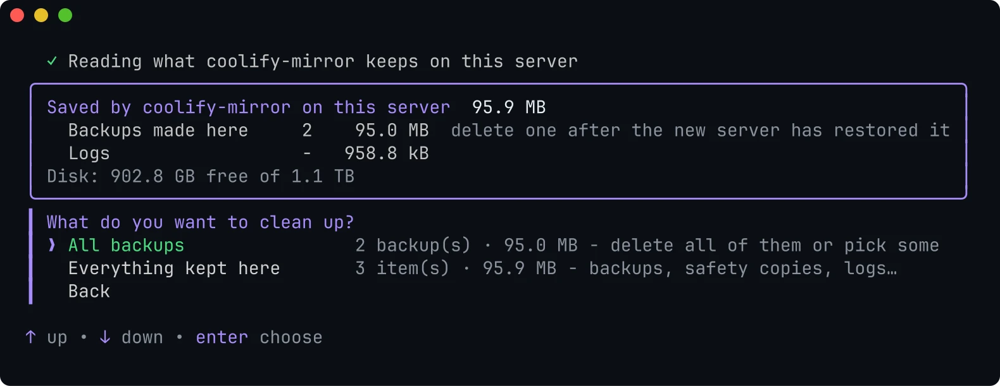
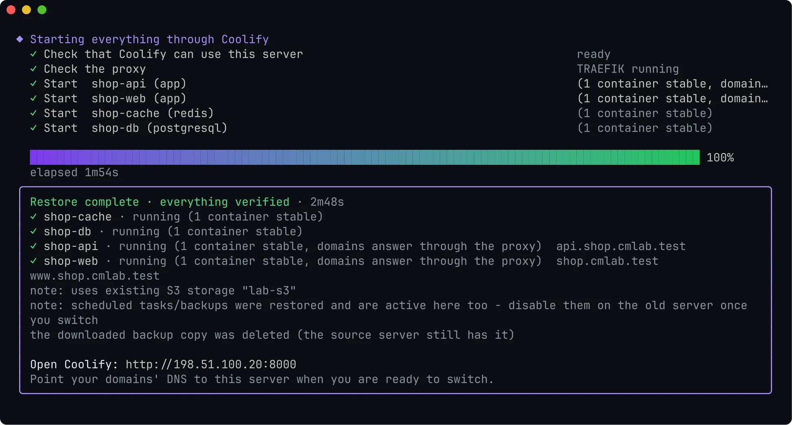

Data, copied while it runs
Volumes, bind folders and files. Containers pause for the seconds a copy takes. Databases never pause.

Back up one app or a whole server. Paste one command on the new one. It arrives running, and verified.

The first installs the tool and opens its menu. The old server prints the second one after the backup.
$ curl -fsSL https://raw.githubusercontent.com/mtalavi/coolify-mirror/main/install.sh | sudo sh
$ curl -fsSL https://raw.githubusercontent.com/mtalavi/coolify-mirror/main/install.sh | sudo sh -s restore 203.0.113.10/hi4i-2dzx-hmeg-42qp-palx-52s7-zq
example
Pick a project in a list, the way Coolify shows it. Everything that makes it run comes along, and the new server starts it through Coolify itself.
Volumes, bind folders and files. Containers pause for the seconds a copy takes. Databases never pause.

PostgreSQL, MySQL and MariaDB are saved with pg_dumpall and mysqldump, then loaded with the same image on the new server.
Projects, environments, variables, storages, tags, scheduled tasks and backup schedules. Secrets are re-encrypted for the new server's key.
Pick a project and everything in it moves together. Moving one app only? The Postgres behind its DATABASE_URL is found and offered.

The exact images your apps run are shipped. Docker Compose apps start from them without cloning or building, which matters most on a slow connection.
Right before anything starts, keep each domain or type a new one. Coolify updates its proxy labels.
Real screens from a move to a freshly installed Coolify 4.4.2 with the released tool. Pick a step, then a screen.
SSH into the old server as root or a sudo user, then run:
curl -fsSL https://raw.githubusercontent.com/mtalavi/coolify-mirror/main/install.sh | sudo sh
curl line.Keep this window open while the new server downloads, or press b to keep sharing in the background for 24 hours.
SSH into the new server and paste the line you copied. It looks like this:
curl -fsSL https://raw.githubusercontent.com/mtalavi/coolify-mirror/main/install.sh | sudo sh -s restore 203.0.113.10/hi4i-2dzx-hmeg-42qp-palx-52s7-zq
example
The rebuild question only appears for apps Coolify builds from Git. Already have the tool here? Run sudo coolify-mirror and choose Restore a backup.

The menu has the whole move as a guide: sudo coolify-mirror, then How it works.

sudo coolify-mirror
On the new server, once everything works, also delete the safety copies under Everything kept here. Without the menu: sudo coolify-mirror files delete --backups

Coolify starts everything. Then the tool checks what actually happened, and says so plainly when something does not work.

Every service that ran on the old server is up on the new one.
All containers healthy, without a single restart.
Each domain is reached through the local Traefik, not just configured.
Optional rebuild from the same commit, without cache.
Three runs on real Coolify installs (4.3.23 and 4.4.2), with what was measured.
A production Docker Compose app with 7 services, Postgres, 6 volumes and a build script on the host, moved to a server with a slow internet connection.
running:healthyA Compose app with a host build script and a named buildx builder, a Dockerfile app, an image app, WordPress with MariaDB, and Postgres. Same secrets, volume data and database rows (md5) as the source, every domain answering, and a full rebuild on the new server.
The tutorial above: a whole project (two apps, Redis and Postgres) moved through port 443 to a brand-new Coolify 4.4.2 with the released 1.9.1. The 47.5 MB download and its checks took a second on the lab network.
The backup is one age-encrypted file. It travels over HTTPS with a certificate pinned by the share code. Plain HTTP is never served.
Same Coolify version, disk space, Coolify's own bundle validation, conflicts, and a trial import in a transaction that is rolled back.
If the import fails, everything it created is removed. A full restore puts back the previous Coolify database and .env.
An existing volume keeps its data as <name>.cm-old-<time>. Replaced folders stay as safety copies until you delete them.
A lock stops two backups or restores at once. Paused containers always resume, even after ctrl+c.
Every run checks the Coolify parts it relies on. A daily job moves real apps between two fresh installs of each new Coolify release.
One file goes from one server to the other. This is what happens on each side.
Every release is on GitHub Releases with its binaries and checksums.
Domains without the container port (vemela.app, not vemela.app:3000), and list and files columns that stay aligned with long names — found in a test on a real 20-project server.
No more "did not work" warning from an older version under "✓ tested" when this release was tested with that Coolify.
Works with Coolify 4.4 (tested on 4.4.2 and 4.3.23): Compose apps start from the restored images again, SQLite databases and secret-manager links (Vault, Doppler, Infisical) move with their apps, and a whole-server move no longer rebuilds Compose apps.
Domains on their own line in the final box, a cleaner share screen, full progress notes, and a question before a Compose domain moves to a service that had none.
A list like Coolify's dashboard: pick a project and its apps, databases, services and domains move together. A review before every backup, backup --project, and a sharper look.
A 4-step quick start and every screenshot retaken from a real move. Behind Coolify's proxy, the share screen names the other server instead of the proxy's address.
The ALL line deletes every backup in one go, or pick some. On the command line: files delete --backups.
See and delete what the tool keeps on both servers. Enter picks the highlighted app, Recommended settings, and a built-in guide.
One short command per server. Checks against every Coolify update, and coolify-mirror update.
Docker Compose apps start from the restored images, without cloning or building.
Success only when the new server really runs the apps. Build dependencies on the host travel too, and --verify-redeploy proves the next deploy.
HTTPS-only transfer with a pinned certificate, native database dumps, a mandatory preflight, and Coolify's official transfer bundle inside.
A domains step at the end of every restore. Released under MIT with a one-line installer.
Selective and full backups, sharing, restores with rollback, and the interactive menu.
Coolify v4.3 and v4.4 (tested with 4.3.23 and 4.4.2), with exactly the same version on both servers. At start the tool says whether this version is tested; every new Coolify release is tested automatically. If the versions differ, it tells you which server to upgrade.
No. With Recommended settings, containers pause only for the seconds their volume copy takes, and databases are dumped while they run. Nothing is deleted on the old server.
Yes. Backing up apps merges them into the new Coolify and keeps everything that is there. An app that already exists can be restored as a copy or skipped. A whole-server backup only goes onto a fresh, empty Coolify.
Port 443 of the old server is blocked. On the old server press q, choose Share a saved backup, the same backup, then Share a link on port 8123. Allow 8123 in your provider's firewall too, and run the new command it shows.
Keep the old server sharing and run the same command again: the download continues where it stopped. On big servers, run the tool inside tmux.
The old server also prints a second command that downloads the tool from the old server itself, over the same pinned connection.
Resources on remote servers, preview deployments and Swarm. Webhooks and DNS keep pointing to the old server until you switch them. Between different CPU architectures, Coolify rebuilds the apps.
No. It is an independent open-source project under the MIT license, not affiliated with Coolify or coolLabs.
$ curl -fsSL https://raw.githubusercontent.com/mtalavi/coolify-mirror/main/install.sh | sudo sh